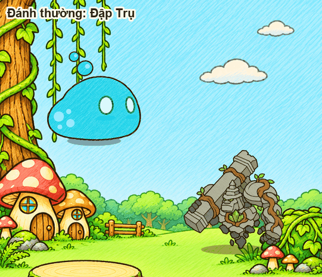
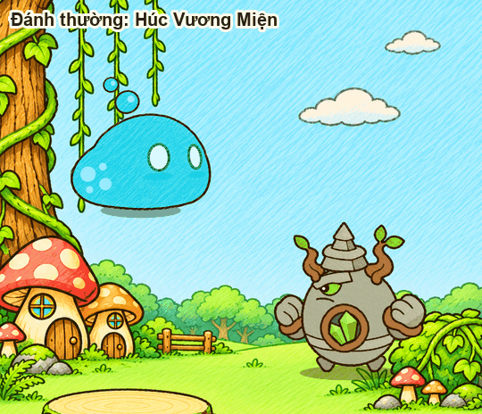
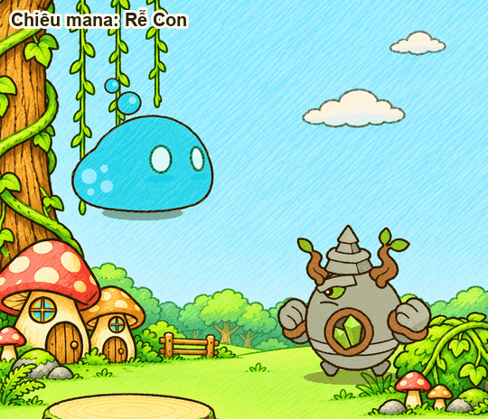
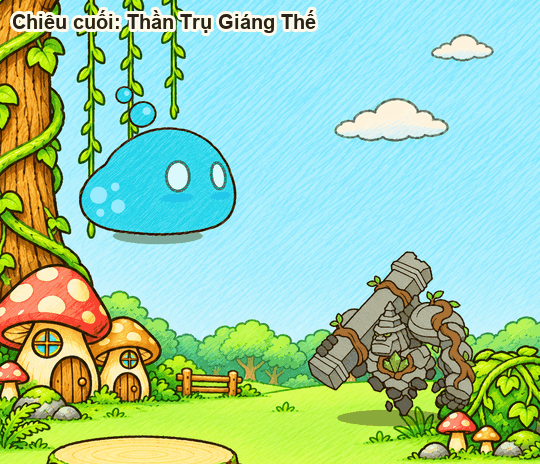

Cổ Vương / Cổ Vương Nhi: xem trước chiêu (rig thật + hiệu ứng tạm)
Tướng mình dưới phải, đối thủ trên trái (như trong trận). Hiệu ứng chỉ để hình dung, sẽ làm lại trong Unity.

tuong_cot_attacktuong_cot_cast
tuong_cot_non_attack
tuong_cot_non_casttuong_cot_non_skill
tuong_cot_skill